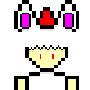

Hay que dejar claras un par de cosas antes de proceder:
La siguiente pagina solo tiene como fin ser una dedicatoria o carta de presentacion unicamente para
proyectos donde Momiji Inubashiri aparece
Mi amor por el personaje es enorme y dado que estoy en constante proceso de aprendizaje y mejora lo usare
para crear practicas del conocimiento aprendido aplicandolo en proyectos donde ella aparezca
Otros proyectos ya mas antiguos y profesionales, seran encontrados y subidos a la pagina principal de
CfGaMeS
Por lo que: Las paginas webs desarrolladas (incluyendo esta), software mas profesional y videojuegos de
practica o ajenos a ella estaran en la pagina anterior ya mencionada
En el desarrollo web soy preferente en la estetica minimalista de inicios de los 2000
En donde predominan mas las palabras, los colores apagados o industriales
Aunque a decir verdad soy muy preferente a las esteticas dreamcore o backrooms. Con imagenes o
gif
En esta parte encontraras algunas webs importantes creadas. Cabe destacar que en la pagina
principal encontraras mas webs desarrolladas por mi
Aunque el desarrollo web minimalista me gusta, no espero hacer cosas para la web relacionadas a ella
En el desarrollo de software soy preferente a los programas basados en terminal de comandos
No soy muy fanatico de las GUI (Interfaces graficas de usuario) debido a la
complejidad y la perdida de tiempo
Al momento de ubicar imagenes, botones, espacios de texto, selectores, colores etc...
En la parte inferior encontraras un boton que te permitira observar los proyectos donde mi musa
aparece
Lee detenidamente las notas, por algo estan no?. Espero sean de tu agrado. MOMIJI ESTA FELIZ DE QUE ESTE ACÁ!
Los videojuegos son alguna de las cosas que mas me gustan
Dado que esta seccion esta dedicada a hacer proyectos unicamente inspirados, homenajes y amor
hacia el personaje de Momiji Inubashiri
Omitire muchos de mis videojuegos que hice. Los mantendre en el anonimato por lo que la seccion
estara vacia
Sin embargo, dejando de lado el anonimato: He creado bastantes juegos. No muy divertidos
ya que en su mayoria eran practicas de lo que aprendia
Cabe descatar que otros proyectos que no tengan que ver con Momiji, seran subidos a la pagina principal
Momiji-Soft 2026
Creado por Lost in the cyberspace o CfGaMeS
Creditos a los respectivos artistas por el contenido multimedia usado en esta web
(Estoy muy enamorado de Momiji <3)